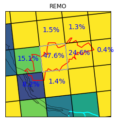

8. REMO output¶
8.1. Introduction to DKRZ¶
https://www.dkrz.de/up/my-dkrz/getting-started/getting-started-at-dkrz
8.2. General hints for working on Eddy/Mistral¶
- You can read a pdf-file with
evince file.pdf
8.3. Dealing with Modeloutput¶
8.4. EURO-CORDEX-Data¶
A lot of information is stored at the homepage:
e.g. User-Guide, Errata-page:
8.5. Remapping tools¶
8.6. Plotting tool¶
- For plotting results: e.g. PyPlotTools (Ref: PyPlotTools)
- Monitoring a REMO-RUN: e.g. Clidas, documentation is in the ArcDoc
8.7. Download multiple files from a web page¶
example page: http://exporter.nsc.liu.se/8d168f8152704e67968ea28b19ab712e/ICHEC-EC-EARTH/day/
wget -r -nd -np -e robots=off -A.nc
http://exporter.nsc.liu.se/8d168f8152704e67968ea28b19ab712e/ICHEC-EC-EARTH/day/
explanation:
- signifies that wget should recursively download data in any subdirectories it finds.
- sets the maximum recursion to 1 level of subfolders.
- copies all matching files to current directory. If two files have identical names it appends an extension.
- does not download a file if it already exists.
- prevents files from parent directories from being downloaded.
- tells wget to ignore the robots.txt file. If this command is left out, the robots.txt file tells wget that it does not like web crawlers and this will prevent wget from working.
- restricts downloading to the specified file types (with .nc suffix in this case)
8.8. download multiple files from ftp server¶
wget -m --user=username --password=password ftp://ip.of.old.host
8.9. Comparing REMO output to Observations¶
8.9.1. Observations have a different grid resolution than REMO output¶
Important: You can only remap to the coarser grid, otherwise you recieve empty grid boxes!
Attention: If grids are very similar, you can also recieve empty gridboxes by using cdo remap.
8.9.1.1. Version 1¶
remap remo data to the grid of the observations (pay attention to different remapping methods for each variable and remember to use height correction for temperature, also see scripts in clidas and wiki-Page remapping tools.
8.9.1.2. Version 2¶
If you want to compare area means, you can also remap your remo-mask
with remapnn to the grid of the observations.
8.9.1.3. Version 3¶
If you want to compare a single location to REMO output, consider the method of Standort Factsheets
Height correction Comparing temperature values of two different kind of files, you need to apply a height correction. Differences of the two orographie files d(height) * 0,0065 K.
8.9.2. Area mean of small catchments¶
e.g. For the Hamburg port area, the value is weighted (e.g. precipitation) of each grid cell with the fraction of that grid cell which covered the port area.
For this, Thomas Raub calculated the fraction of each grid cell which covered the catchment, see figure attached. https://git.gerics.de/GERICS_products/HPA-Factsheet
 Method of weighted mean for small areas
8.10. Useful cdo hints¶
https://code.mpimet.mpg.de/projects/cdo/
8.10.1. cdo ensmean¶
cdo ensmean only works if all rcm simulations are on an identical
grid. Check grid with cdo griddes
8.10.2. selindexbox and keep rotated grid by using cdo¶
If you use cdo version 1.9.5 you can select rlon, rlat and you can
even select a subgrid with selindexbox and still preserve rlon/rlat
(this was not the case in earlierer cdo-versions, they would get grid of
the rlon/rlat grid information and would only keep lat/lon grid)
8.10.3. Change rotated grid rlon/rlat to lon/lat¶
If you want to change the rlon/rlat of a remo-file to lat/lon grid, you
can use cdo setgridtype curvilinear
8.11. Useful netcdf file hints¶
8.11.1. Delete history¶
If you like to give away a data file or publish it in a publication and do not want to publish its history. You can delete the whole history:
ncatted -h -a history,global,d,, old-file.nc new-file.nc
8.11.2. Change unit¶
If you changed the unit of the data file from e.g. Celcius to Kelvin, you should also change the unit in the header have a look first how your variable is called (ncdump -h) e.g. Variable: tg
ncatted -O -a units,tg,o,c,“Kelvin” -h file.nc
8.11.3. Change variable name¶
(ncdump -h) e.g. Variable: var167 to tas
ncrename -h -O -v variable_name,new_variable_name file.nc
8.11.4. Select one variable¶
Sometimes “cdo selvar” or “cdo selcode” does not work, then:
ncks -v variable file.nc variable.nc